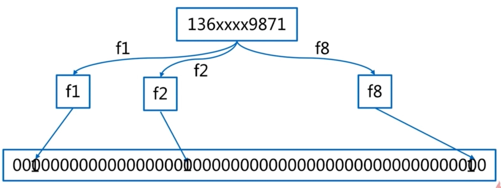

布隆过滤器
实现原理
- 一个很长的二进制向量和若干个哈希函数
 - 参数：m 个二进制向量，n 个预备数据，k 个 hash 函数构建布隆过滤器：n 个预备数据走一遍上面过程
- 判断元素存在：走一遍上面过程：如果都是 1, 则在表明存在，反之不存在。
误差率

- m/n与误差率成反比。k与误差率成反比

生命的意义是成为你自己！


#include <iostream>
using namespace std;
class Monkey {
public:
Monkey() {}
virtual Monkey* Clone() = 0;
virtual void Play() = 0;
};
class Goku : public Monkey {
public:
Goku(const string& name) : _name(name) {}
Goku(const Goku& other) {_name = other._name;}
~Goku() {}
Monkey* Clone() {
return new Goku(*this);
}
void Play() {std::cout << " Goku Playing" << std::endl;}
string _name;
};
int main() {
Monkey* m = new Goku("QitianDasheng");
Monkey* m1 = m->Clone();
Monkey* m2 = m->Clone();
Monkey* m3 = m->Clone();
m1->Play();
m2->Play();
m3->Play();
}
package prototype
import "fmt"
type Monkey interface {
Clone() Monkey
Play()
}
type Goku struct{}
func (g *Goku) Clone() Monkey {
return &Goku{}
}
func (g *Goku) Play() {
fmt.Println("Goku Play")
}
func TestPrototype(t *testing.T) {
var m Monkey = &Goku{}
m1 := m.Clone()
m2 := m.Clone()
m3 := m.Clone()
m1.Play()
m2.Play()
m3.Play()
}
from abc import ABCMeta, abstractmethod
class Prototype(metaclass=ABCMeta):
@abstractmethod
def clone(self):
pass
import copy
class Knight(object):
def __init__(self, level):
self.unit_type = "knight"
file_name = "./{}_{}.dat".format(self.unit_type, level)
print(file_name)
with open(file_name, 'r') as parameter_file:
lines = parameter_file.read().split("\n")
self.life = lines[0]
self.attack_power = lines[1]
self.attack_range = lines[2]
self.weapon = lines[3]
self.speed = lines[4]
def __str__(self):
return "Life: {0} Speed: {1} " \
" Attack Power: {2}" \
" Attack Range: {3}" \
" Weapon: {4}" \
" Type: {5}".format(self.life,
self.speed,
self.attack_power,
self.attack_range,
self.weapon,
self.unit_type)
def clone(self):
return copy.deepcopy(self)
class Archer(object):
def __init__(self, level):
self.unit_type = "archer"
file_name = "./{}_{}.dat".format(self.unit_type, level)
print(file_name)
with open(file_name, 'r') as parameter_file:
lines = parameter_file.read().split("\n")
self.life = lines[0]
self.attack_power = lines[1]
self.attack_range = lines[2]
self.weapon = lines[3]
self.speed = lines[4]
def __str__(self):
return "Life: {0} Speed: {1} " \
" Attack Power: {2}" \
" Attack Range: {3}" \
" Weapon: {4}" \
" Type: {5}".format(self.life,
self.speed,
self.attack_power,
self.attack_range,
self.weapon,
self.unit_type)
def clone(self):
return copy.deepcopy(self)
class Barracks(object):
def __init__(self):
self.units = {
"knight": {
1: Knight(1),
},
"archer": {
2: Archer(2),
}
}
def build_units(self, unit_type, level):
return self.units[unit_type][level].clone()
if __name__ == '__main__':
barracks = Barracks()
archer1 = barracks.build_units("archer", 2)
knight1 = barracks.build_units("knight", 1)
print('knight {}'.format(knight1))
print('archer {}'.format(archer1))
package design_pattern
type ProtoType interface {
clone() ProtoType
}
type Knight struct {
Name,Weapon string
}
func (k *Knight) clone() ProtoType {
knight := (*k)
return &knight
}
func (k *Knight) setWeapon(weapon string) {
k.Weapon = weapon
}
type Archer struct {
Name,Weapon string
}
func (r *Archer) clone() ProtoType {
archer := (*r)
return &archer
}
type Barracks struct {
units map[string]interface{}
}
func NewBarracks() *Barracks {
return &Barracks{
units: make(map[string]interface{}),
}
}
func (b *Barracks) Add(name string, types ProtoType) {
b.units[name] = types
}
func (b *Barracks) Build(name string) ProtoType {
return b.units[name].(ProtoType).clone()
}
type WorkExperience struct {
date, company string
}
func (w *WorkExperience) clone() ProtoType {
work := (*w)
return &work
}
type PersonInfo struct {
name, sex, age string
}
type Resume struct {
name, sex, age string
work *WorkExperience
}
func (r *Resume) clone() ProtoType {
resume := &Resume{
name: r.name,
}
return resume
}
func (r *Resume) setPerson(sex, age string) {
r.sex, r.age = sex, age
}
func (r *Resume) setWork(date, company string) {
r.work = &WorkExperience{}
r.work.date, r.work.company = date, company
}
package design_pattern
import (
"fmt"
"testing"
)
func TestPrototype(t *testing.T) {
barracks := NewBarracks()
knight := &Knight{"knight", "long bow"}
archer := &Archer{"archer", "short bow"}
barracks.Add("knight", knight)
barracks.Add("archer", archer)
k1 := barracks.Build("knight")
a1 := barracks.Build("archer")
k2 := barracks.Build("knight")
a2 := barracks.Build("archer")
fmt.Println(k1, a1)
fmt.Println(k2, a2)
}
func TestResume(t *testing.T) {
var resume ProtoType = &Resume{name : "a"}
resume.(*Resume).setPerson("male", "29")
resume.(*Resume).setWork("2019-02-01", "apple")
resume2 := resume.clone()
resume2.(*Resume).setPerson("male", "30")
resume2.(*Resume).setWork("2019-02-17", "alia")
fmt.Println(resume, resume2)
}
//
// Created by eredinliu on 2020-02-02.
//
#include <iostream>
using namespace std;
class IClone {
public:
virtual IClone* Clone() = 0;
virtual void Show() = 0;
virtual void Coding() = 0;
IClone() {}
};
class Person : public IClone {
public:
Person(const string& name, __const string& age) : name_(name), age_(age) {}
IClone* Clone() {
IClone* copy = new Person(this->name_, this->age_);
return copy;
}
void Show() {
cout << "I'm " << this->name_ << " age " << this->age_ << endl;
}
void Coding() {
cout << "I'm programmer, coding change world \n";
}
private:
string name_, age_;
};
int main() {
IClone* person = new Person("tony", "27");
IClone* clone = person->Clone();
clone->Coding();
clone->Show();
}
package desian_pattern_practise
type IClone interface {
Clone() IClone
Show()
Coding()
}
type Career struct {
name, age string
}
func (c *Career) Show() {
println("I'm", c.name, "Age", c.age)
}
func (c *Career) Coding() {
println("I'm programmer, coding change world")
}
func (c *Career) Clone() IClone {
return &Career{
name: c.name,
age: c.age,
}
}
func TestCareer_Clone(t *testing.T) {
career := &Career{"ming", "IT"}
var c1 IClone = career.Clone()
c1.Show()
c1.Coding()
}
from copy import copy, deepcopy
class Clone(object):
def clone(self):
return copy(self)
def deep_clone(self):
return deepcopy(self)
class Person(Clone):
def __init__(self, name, age):
self.__name = name
self.__age = age
def show(self):
print("I'm {} age {}".format(self.__name, self.__age))
def coding(self):
print("I'm programmer, coding change world")
def reading(self):
print('reading make me happy')
def fall_love(self):
print('fall in love')
if __name__ == '__main__':
tony = Person('tony', 27)
tony.show()
tony.coding()
tony1 = tony.clone()
tony.show()
tony.coding()